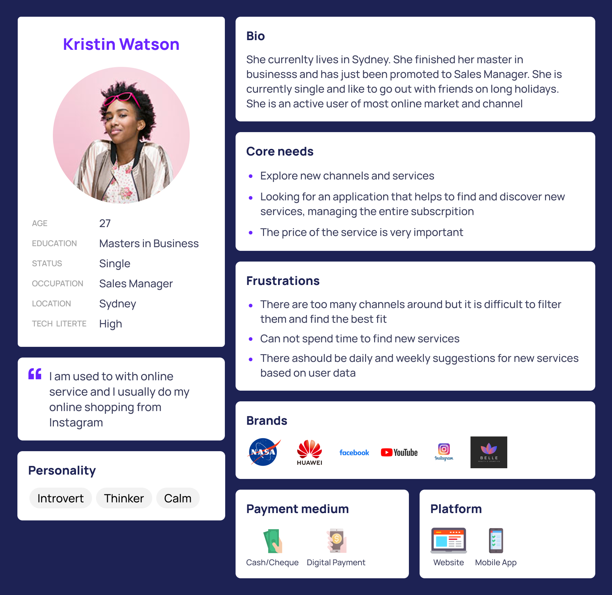
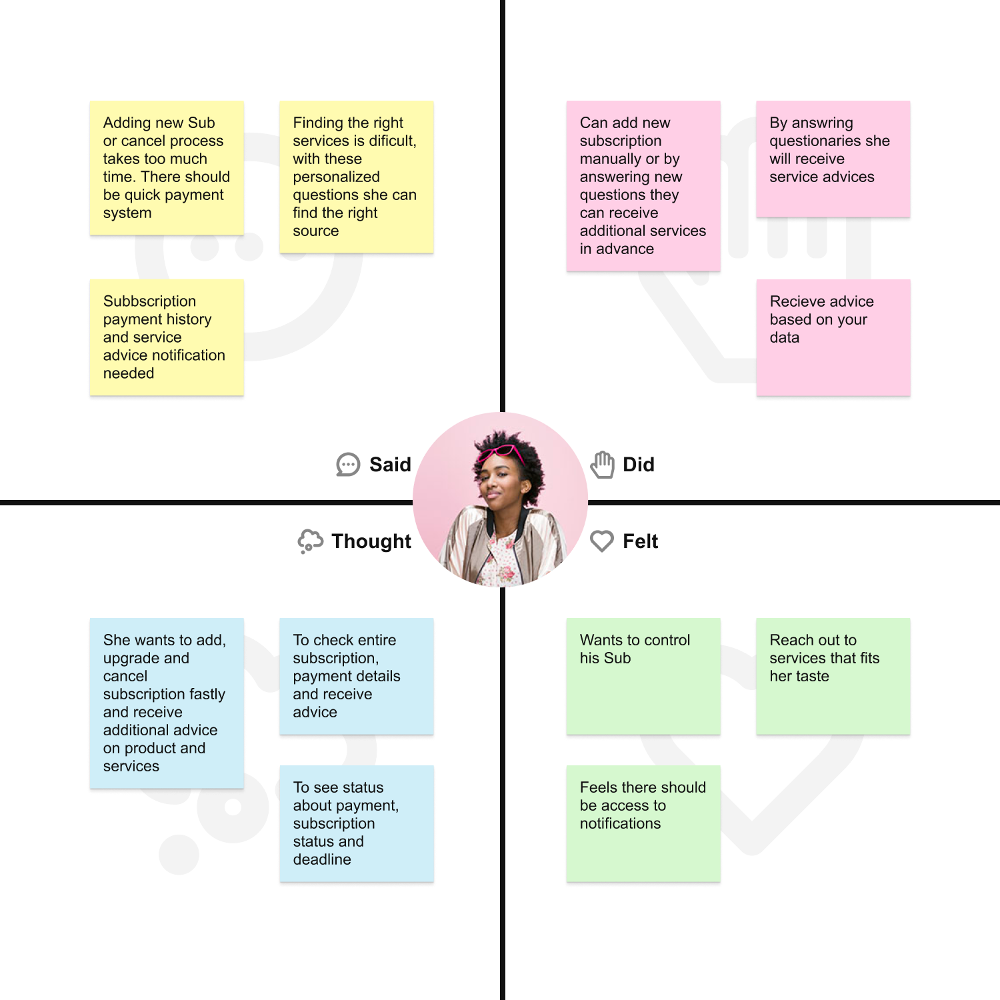
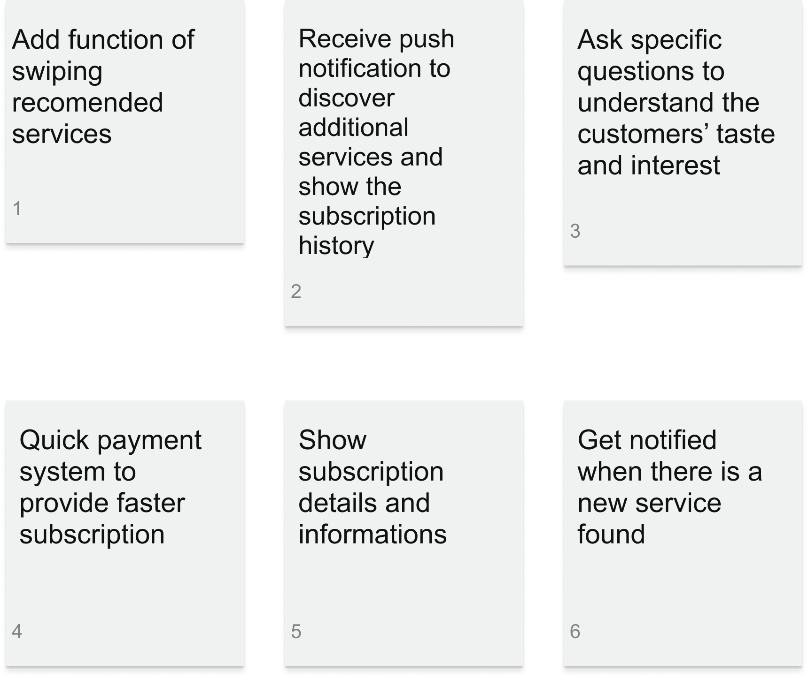
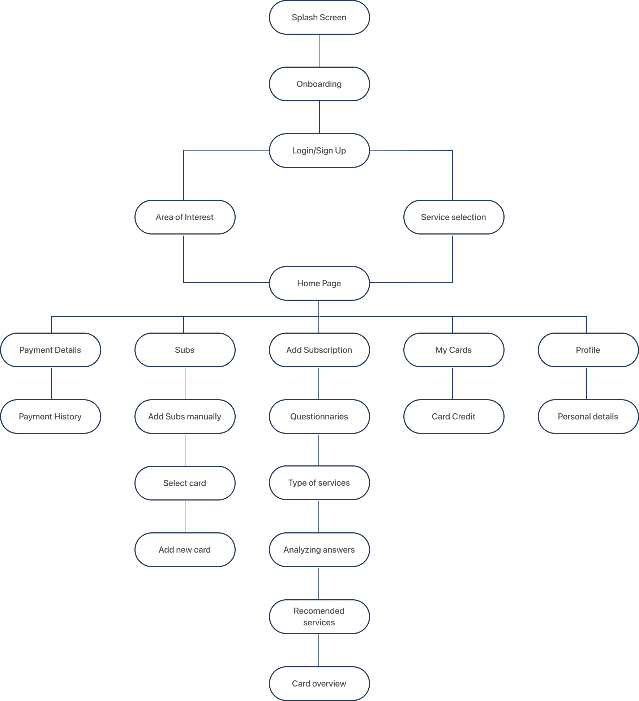
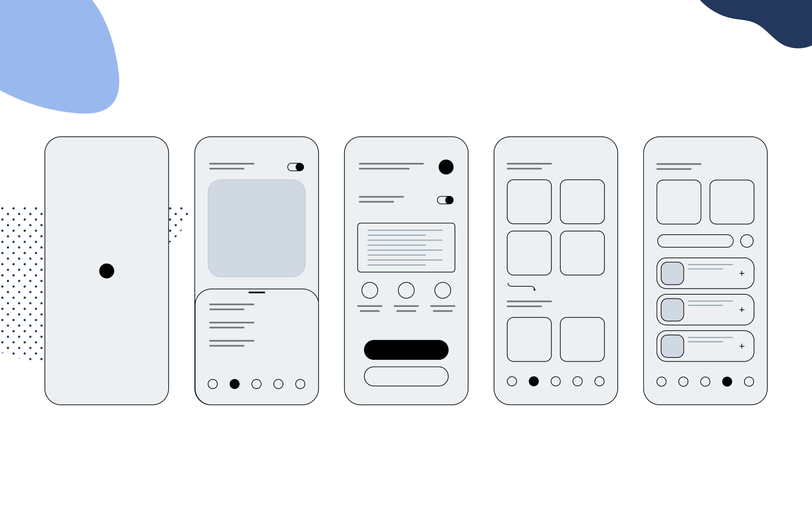

UX Case Study
Subscription Manager
Year
2019Duration
6 MonthsRole
UX Research, Competitive Analysis, IA, Wireframing, Usability Testing
About project
Subscription Manager is service which provides personalized advice to users on the subscription that they currently hold and recommend additional services It also helps discover new services based on your answers to the personalized questionnaire.
1. Discovery Phase
User Interview
What I did:
In order to provide empathy to our users and increase customer satisfaction, we need to understand what motivates them to use the application and how we can increase customer engagements in this services.
Before creating applications it's important for we as designers to keep in mind what the the most important things to the users, where are their priorities, needs, pain points. To make designs user friendly we need to design by touchpoints and research insights. Here I
mostly start with Interviews, Research, Empathizing with my users and analyzing customer behaviors to provide an effective User Experience
Some Questions I Asked
- 1. How many devices do they get to subscribe on a regular basis
- 2. What process do they take to do their subscriptions
- 3. Are they ble to find alternative for all their subscriptions
- 4. How long does it take to have all their subscriptions made
- 5. How they would feel to have the apps that help manage all their subscriptions
2. Define Phase
User Persona
What I did:
After summing up the User Interviews, creating User Persona is used to help realize our customers more detailed. with this, I could understand the main focus' behaviors, act and needs. In this project,
we can recommend new Services to our users by using a personalized questions

Empathy Map
What I did:
Empathy Map is used to understand the experience from the users' eyes; it also creates an understanding of their interaction with the product as well as improvements required in the future. I crafted the Empathy Map based on the customers goals, touchpoints, feelings, thinking, Said, and painpoints.

3. Develop Phase
Process Flow
Detecting problems is a little step of generating great products. It is also extremely necessary to generate the right solution after reviewing the problems during the define process

Information Architecture
Information Architecture is a core part of a powerful User Experience Design and another important step in application design process. Efficient IA helps users quickly and easily navigate through content and find everything the users need without any hassle. It helps us bring the planned flow through the entire application.

4. Delievery Phase
Low Fidelity Wireframing
Low fidelity wireframes are quick sketches created to make ideas more tangible. It helps helps identify the concepts and mistakes. I do low fidelity wireframes before starting the UI designs

Final UI Design
Low fidelity wireframes are quick sketches created to make ideas more tangible. It helps helps identify the concepts and mistakes. I do low fidelity wireframes before starting the UI designs
Onboarding Screen

Other Screens